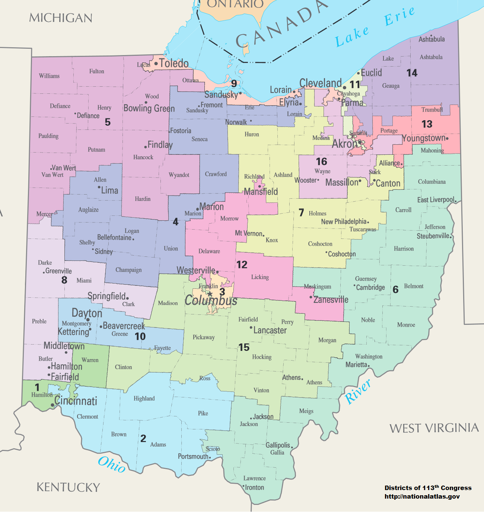
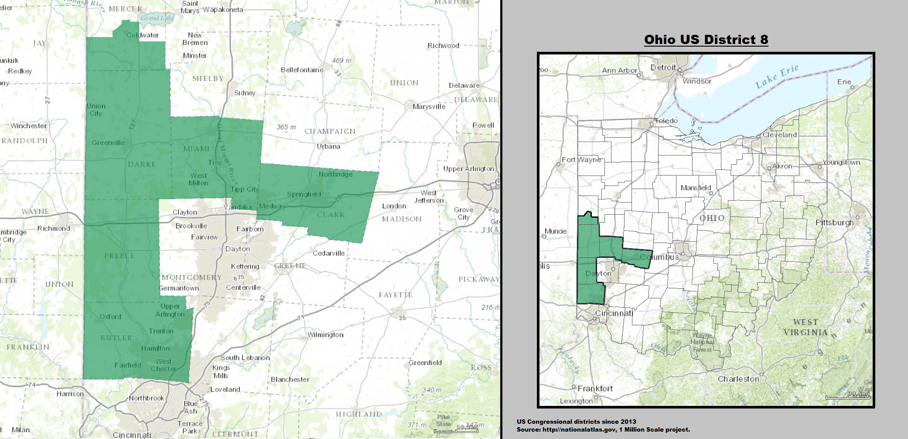

The United States uses congressional districts for representation in congress. There are 435 seats in the house of representatives and each seat has one representative who represents all of the people that live in that district. Each congressional district represents roughly 747,000 people and this is true across the country. Each time a census done, states can gain and lose the amount of districts based on the population in that state. For example, after the 2010 census, Ohio lost two congressional districts due to population changes in the state.
Above is the current congressional district map for the state of Ohio. As you can see, there are 16 districts which correspond to the 16 seats that Ohio has.
Above is the current 8th congressional district for the state of Ohio. This is the district where Miami University is in and the current representative is Republican Warren Davidson.
The history of the house of representatives is extensive but it was created to solve the issue of how to fairly represent the citizens of the United States. During the constitutional conventions back in the late 1700's, there was an issue on how the people were to be represented. There were two major plans, the New Jersey plan which constitutes two houses both of which represents the people. The other plan was the Virginia plan which eventually was put into the Constitution. The Virginia plan constitutes a two house system where there is an upper house, the senate, which represents the states and a lower house, the house of representitives, which fairly represents the people.